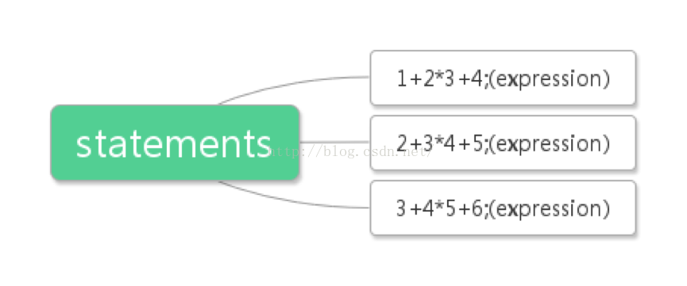
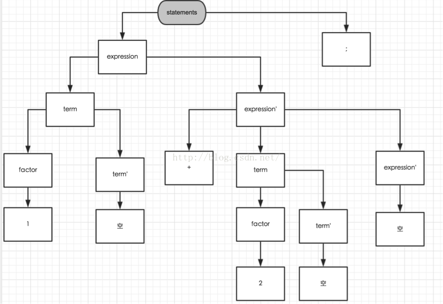

用java实现编译器-算术表达式及其语法解析器的实现
大家在参考本节时，请先阅读以下博文，进行预热：
http://blog.csdn.net/tyler_download/article/details/50708807
本节代码下载地址：
http://pan.baidu.com/s/1sjWiwPn
代码的理解和运行是吃透编译原理的关键，如果我们看的是爱情动作片，自然选择无码的好，但如果看得是计算机课程，则必须有码，无码的计算机理论都是耍流氓。
当前，java所实现的简易编译器目的是将一条或一组含有加号和乘号的算术表达式编译成类似汇编语言的伪码，因此必须给算术表达式设立一组语法规则，那么程序才能对输入的表达式进行分析。我们把一组带有分号的算术表达式称为statements, 例如:
1+2*3+4;
2+3*4+5;
3+4*5+6;
这三个表达式的集合称为statements.同时将一组表达式中的某一条带有分号的表达式称为expression, 这样statements 就是由一个或多个expression组成的:

因此statements的语法规则可以写成：
statements -> expression; | expression; statements
大家看到该语法定义跟我在上一篇文章中举的例子有所不同：
1. 在-> 右边有两组解析规则，他们用符号 | 分割开。
2. -> 左边的被解析的对象居然在右边的解析规则中出现，形成了一种循环，也就是用自己来解释自己，这种情况在编译原理中称为左循环LR (Left recursive).
这里，大家可能会发现语法定义的一些问题：
1. 右边有两组解析规则，用右边替换左边时，到底选取哪一组？
2. 左边的符号(statements) 出现在右边的规则中，替换的话就会出现死循环：
statements(buffer) {
expression(buffer);
statements(buffer); //此处将导致循环调用
}
这些问题，在后面我们再加以解决，暂且先继续给出余下的语法规则：
Expression ->expression + term | term;
term -> term* factor | factor
factor ->NUMBER | (expression)
看到这，大家会不会有点恼火，为什么这组语法规则能够用来解析一组算术表达式? 你是根据什么办法给出这组规则的？我以前在读编译原理的相关书籍时也会有这些郁闷和困惑，都不知道作者是怎么想到的，书中解释有含糊不清，直到现在我才明白，在学习的早期，有些地方你必须先囫囵吞枣，带着疑惑看到后面，你自然就会明白，所以大家在此先无需理解我是怎么给出这组语法定义的，先记着，然后把代码跑一边，看看结果，有个感性认识，在后续文章中，我会慢慢解释，如何根据要编译的文本，给出相应的语法规则。
现在我们来解决前面提到的两个问题, ->右边有两组替换规则，在语法解析的时候，如何决定选取哪一组？在编译原理的实现技巧中，有一种方法叫look ahead, 举个例子,对规则：
statements ->expression; | expression; statements
替换时用“| “ 左边的 expression; 还是右边的expression; statements呢,办法是当我们在程序中，读到第一个分号”;” 时，再继续读入下一个符号，如果继续读入符号时，返回的是输入的结束标志(EOI) 那么我们就使用“|” 左边的规则来替换，如果继续读入的符号不是结束标志，那意味着分号后边还有需要解析的信息，那就使用“|” 右边的替换规则，这种技巧在语法解析中就叫look ahead.
如何解决语法规则中出现循环调用呢？我们需要对语法规则做一些更改，更改原理在以后的文章中再做进一步的解释，请大家再囫囵吞枣一次，我知道吃东西不消化会对胃不好，黄天在上，这里是最后一次这样，请大家原谅，修改后的语法规则如下：
1. statements -> ‘空‘ | expression; statements
2. expression-> term expression'
3. expression'-> +term expression' | ‘空‘
4. term -> factor term'
5. term' -> * factor term' | ‘空‘
6. factor -> number | (expression)
这组修改后的语法规则比修改前更加难以理解，但能确保，这组规则不会出现修改前那样导致解析死循环。语法规则中的’空’ 表示结束，什么都不做。例如如果我们输入一个空字符串””给语法解析器，那么规则1中就以”空”来解析输入的空字符串，其结果就是程序什么都不做，直接返回，在程序中”空” 相当于return语句。
我们用表达式：1 + 2 ; 看看语法规则形成的解析树是怎样的：

在下面给出的视频中，我将对代码实现进行详细的讲解，同时通过运行代码，让大家体会到执行的效果，以帮助大家对语法解析的原理和实现有深一步的认识，大家把代码下下来，对着视频中的步骤运行一次，便可得知一个语法解析器的“五脏六腑"是如何组合运行的。由于视频中会出现代码解析，如果画面分辨率过低，可能无法看清代码，请大家在观看视频时将分辨率设置成高清或1080P。
由于csdn无法插入视频，我将视频地址给出如下：
http://v.youku.com/v_show/id_XMTQ4MTI2NzgyMA==.html?firsttime=0&from=y1.4-2